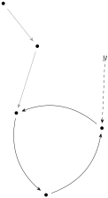
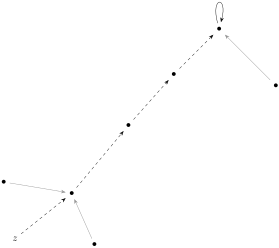

I thought that the Session following my bookmark was going to be difficult, but this was actually a relatively easy reading this week. I’m enjoying the sessions written in this style where the association between the abstract representations and the practical uses are laid out in an imaginary classroom. It makes me feel like I’m a part of collective effort to understand this.
Example4.7.1.Exercise 1:.
Suppose that \(x' = \alpha^3(x)\text{...}\)
Solution.
We’re given that \(X^{\circlearrowright \alpha}
\xrightarrow{f}
Y^{\circlearrowright \beta}\) is a map in \(\mathcal{S}^{\circlearrowright}\text{,}\) which tells us that \(f \alpha = \beta f\text{.}\) If we know that we have some \(x' = \alpha^3(x)\text{,}\) we could sketch the external diagram as follows:
Figure4.7.2.Commutative diagram of \(\alpha^3\) over \(f\)
Knowing that \(x' = \alpha^{3}(x)\) and \(y' = \beta^{3}(y)\) for some \(f(x) = y\text{,}\) we can establish that \(f(x') = y'\) through the associative property:
\begin{equation*}
y' = \beta^3(y) = \beta \beta \beta f x
\end{equation*}
\begin{equation*}
= \beta \beta f \alpha x
\end{equation*}
\begin{equation*}
= \beta f \alpha \alpha x
\end{equation*}
\begin{equation*}
= f \alpha \alpha \alpha x
\end{equation*}
Rather than just replicating the entire diagram here, I’ll just focus on the relevant "clusters". Let’s start with the set of points connected to \(y\text{.}\) The pre-periodic behavior will be dashed while the periodic behavior solid black. Grey will denote paths not taken.

Figure4.7.4.Observed behavior of \(y\)
This endomap takes one step after \(y\) then becomes periodic with a cycle length of 3 steps.
Next, let’s isolate \(z\text{.}\)

Figure4.7.5.Observed behavior of \(z\)
Beginning at point \(z\text{,}\) we take 3 steps before reaching a fixed point.
Finally, let’s sketch the hypthotical enodmap of a light switch that could only be lit four times.
I’m going to suggest that the first state be called \(\text{off}_0\text{.}\) The first time we flip the switch, we’d get \(\text{on}_0\text{.}\) Then we alternate between "off" and "on", until we have a set of 4 "on" states: \(\{\text{on}_0,\text{on}_1,\text{on}_2,\text{on}_3 \}\text{.}\) Following that final on, we reach a terminal state that is perpetually "off". Putting the whole thing together might look something like this:
Figure4.7.6.Observed behavior of \(z\)
The only thing that strikes me as being tricky about this was that my "off" and "on" states had to be different for each time the light was switched. Even though looking at the light buld you’d only see whether the light was on or off, there needs to be an internal state to the light bulb that tracks how many times it’s been used.
In part (a) our task is to "[s]how that ’gender’ is a map in the category \(\mathcal{S}^{\circlearrowleft \circlearrowright}\) from \(\mathbf{P}\) to the object [defined as \(\mathbf{G}\) below]":
Figure4.7.8.Object \(\mathbf{G}\) for Session 12 Exercise 3
Here the maps \(f\) and \(m\) are meant to represent "father" and "mother" relationships. Obviously "real gender" is more complex than this, but we’ll roll with it.
We’ll start by identifying our checklist for the category:
A category has objects.
A category has maps.
For each map, there is one object representing the domain and one object representing the codomain.
For any pair of maps \(A \xrightarrow{f} B \xrightarrow{g} C\) we can form a composite map \(g \circ f\text{.}\)
The category upholds the identity laws. If \(A \xrightarrow{f} B\text{,}\) then \(1_B \circ f = f\) and \(f \circ 1_A = f\text{.}\)
The category upholds the associative law: if \(A \xrightarrow{f} B \xrightarrow{g} C \xrightarrow{h} D\) then \((h \circ g) \circ f = h \circ (g \circ f)\text{.}\)
Well, we have some objects. These include the people and properties we’re looking at. We also have some maps that relate our people and and properties with each other. We’re particularly concerned with a ’gender’ map I’ll call \(\mathbf{P} \xrightarrow{\gamma} \mathbf{G}\) which takes a person and returns a gender.
We also have objects representing the domain and codomain of our map \(g\text{.}\) The domain \(\mathbf{P}\) is the set of all people and the codomain is the set of genders \(\mathbf{P}\text{.}\) We’ll also have two identity maps \(1_\mathbf{P}\) and \(1_\mathbf{G}\) which can satisfy \(1_\mathbf{G} \circ g = g = g \circ 1_\mathbf{P}\text{.}\)
For us to define a composition of maps, let’s first identify the structures we want to preserve. Our "people space" came equipped with two endomaps \(\mathbf{P} \xrightarrow{m} \mathbf{P}\) and \(\mathbf{P} \xrightarrow{f} \mathbf{P}\) that take a person and return the person’s "mother" or "father" respectively.
This object \(\mathbf{G}\) does something interesting here by defining it’s own version of those endomaps \(f, m\text{.}\) These maps operate on genders rather than people, but defining them this way allows us to preserve the structure. Perhaps it might be clearer if denote them separately. Let’s call \(f_P, m_P\) the endomaps on people and \(f_G, m_G\) the endomaps on genders. We could compose maps to form the following commutative diagram:
Figure4.7.9.Commutative diagram for \(g\)
In order to maintain our structure, we’d want to have both \(m_G g = g m_P\) and \(f_G g = g f_P\text{.}\) Fortunately, \(m_G\) and \(f_G\) are basically constants in \(\mathbf{G}\text{.}\) For any given person \(p \in \mathbf{P}\) (in this model), we could potentially have \(g p = \text{female}\) or \(g p = \text{male}\text{,}\) but if we compose with our endomaps \(m, f\) we get fixed points. For any person \(p\text{,}\) we can expect that their mother is female (both \(g m_P p = \text{female}\) and \(m_G g p = \text{female}\)) and father is male (both \(g f_P p = \text{male}\) and \(f_G g p = \text{male}\)).
I’m thinking that central idea of part (a) is to define a map \(g\) in \(\mathcal{S}^{\circlearrowleft \circlearrowright}\) as a map \({}^{m \circlearrowleft} \mathrm{A}^{\circlearrowright f}
\xrightarrow{g} {}^{m' \circlearrowleft} \mathrm{B}^{\circlearrowright f'}\) satisfying the pair of equations \(m' g = g m\) and \(f' g = g f\text{.}\)
Given some other map \(h\) in \(\mathcal{S}^{\circlearrowleft \circlearrowright}\text{,}\) with \({}^{m' \circlearrowleft} \mathrm{B}^{\circlearrowright f'}
\xrightarrow{h} {}^{m'' \circlearrowleft} \mathrm{C}^{\circlearrowright f'''}\) we’d need to show that our composition \(h \circ g\) is also a valid \(\mathcal{S}^{\circlearrowleft \circlearrowright}\)-map. This should follow directly from the associative property and our structure preserving equations:
\begin{equation*}
(h \circ g) m = h g m = h m' g = m'' h g = m'' \circ (h \circ g)
\end{equation*}
\begin{equation*}
(h \circ g) f = h g f = h f' g = f'' h g = f'' \circ (h \circ g)
\end{equation*}
The last thing we need to verify is the associative property. Given a third map \(i\) in \(\mathcal{S}^{\circlearrowleft \circlearrowright}\text{,}\) with \({}^{m'' \circlearrowleft} \mathrm{C}^{\circlearrowright f''}
\xrightarrow{i} {}^{m''' \circlearrowleft} \mathrm{D}^{\circlearrowright f'''}\text{,}\) we want to show \((i \circ h) \circ g = i \circ (h \circ g)\text{.}\) I’m pretty sure we get this for free as being objects in the category of sets.
For part (b), we expand our structure with a "clan" object defined as follows:
Figure4.7.10.Object \(\mathbf{C}\) for Session 12 Exercise 3
Like before, we’d want our structure to be preserved. Given a map \({}^{m \circlearrowleft} \mathbf{P}^{\circlearrowright f}
\xrightarrow{c}
{}^{m' \circlearrowleft} \mathbf{C}^{\circlearrowright f'}\text{,}\) we’d want to enforce the conditions that \(c \circ m = m' \circ c\) and \(c \circ f = f' \circ c\text{.}\)
Since "a child’s clan is the same as that of [their] mother", it follows that for any person \(p\) we’d have \(c p = c m p\text{.}\) As a result, our condition that \(c \circ m = m' \circ c\) is satisfied by making \(m' = 1_C\text{.}\)
Since "[m]arriages with clans are forbidden", it follows that for any person \(p\) we’d have \(c f p \neq c m p\text{.}\) However, we already know \(c m p = c p\) so it follows that \(c f p \neq c p\text{.}\) Since there’s only two elements in \(\mathbf{C}\) it follows that \(f'\) needs the antipodal map so that \(c \circ f = f' \circ c \neq c\text{.}\)
In the last part (c), we attempt to combine "gender" and "clan" to make a cartesian product: \(\mathbf{G} \times \mathbf{C}\text{.}\) Essentially, there are four possible combinations of clan and gender: he-wolf, she-wolf, he-bear, and she-bear. We’ll examine each in turn.
For a "he-wolf", his mother needs to be a "she-wolf" and father a "he-bear". For a "she-wolf", her mother needs to be a "she-wolf and father a "he-bear". For a "he-bear", his mother needs to be a "she-bear" and father a "he-wolf". For a "she-bear", her mother needs to be a "she-bear" and father a "he-wolf".
Since we assign a "mother arrow" and a "father arrow" for each point, we can draw an endomap diagram representing the relations:
Figure4.7.11.Endomaps \(m\) and \(f\) on \(\mathbf{G} \times \mathbf{C}\)
To verify that this is a valid \(\mathcal{S}^{\circlearrowleft \circlearrowright}\)-map, we’ll examine if the structure preservation properties hold.
Table4.7.12.Break down of gender-clan compositions
\((g \times c) p\)
\((g \times c) m p\)
\((g \times c) f p\)
\(m' (g \times c) p\)
\(f' (g \times c) p\)
he-wolf
she-wolf
he-bear
she-wolf
he-bear
she-wolf
she-wolf
he-bear
she-wolf
he-bear
he-bear
she-bear
he-wolf
she-bear
he-wolf
she-bear
she-bear
he-wolf
she-bear
he-wolf
I’m not sure if there’s much else I need to do here since we inherent the rest of our needed properties from \(\mathcal{S}\text{.}\)